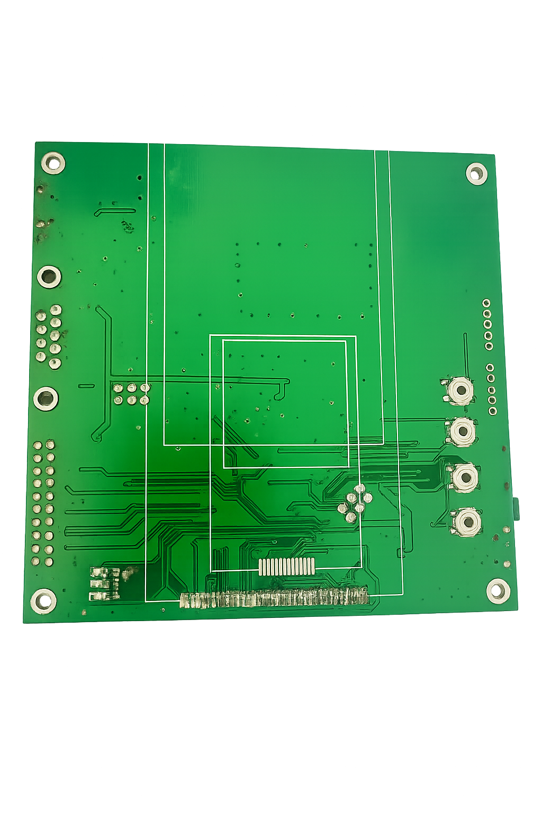

MCU und Anzeige
STM32F103RCT6 mit Anschlüssen für LCD und resistiven Touchscreen.
STM32-MCU-Entwicklungsplattform
Ein fertiges Open-Hardware-Board, das Anzeige, Touch, Speicher, Kommunikation und Sensoranschlüsse vereint.

STM32F103RCT6 mit Anschlüssen für LCD und resistiven Touchscreen.
MicroSD, W25Q64 SPI-Flash und AT24C02 EEPROM.
CP2102 USB-Seriell und MAX232-basierte DB9-RS232-Schnittstelle.
RTC, Infrarotempfänger, DS18B20, Tasten, LEDs und Erweiterungs-I/O.
SWD/JTAG und Erweiterungsleisten unterstützen Programmierung und Tests.
Das reale Board funktioniert; der PCB-Bericht weist null DRC-Fehler aus.
